VIOLENCE
HEHEHEHE!!! So welcome to the seventh circle… before we enter, I’d just like to explain that this circle also consists of three different rings…. Which we won’t have enough time to fully visit… but we can see each of them briefly!

So… the deep valley that we’re entering is the first ring! This ring is for those who were violent toward others and they spend eternity in a river of boiling blood!!!

Alright… tough crowd…. Moving on…. The second ring is where we encounter those who were violent towards themselves…. People who kill themselves… :(
I feel kinda bad for them but these souls must endure eternity in the form of trees… ooh… this part of the tour makes me cry every time :((
Moving on… the last and deepest ring contains those who were violent toward God, the blasphemers… and yea they have to walk on a desert of burning sand… Boohoo…
Alright then…. Emotional circle…NEXT CIRCLE!!!!!!